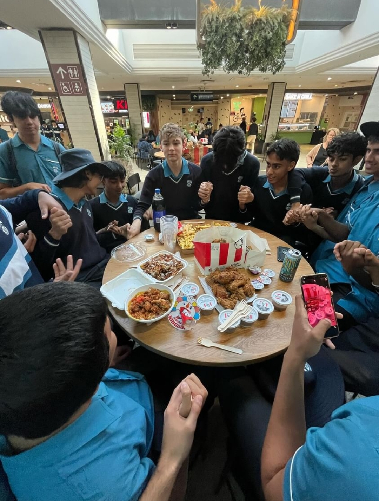

Waniga Feast 1
One for the ages. Waniga Feast 1 was the event that started it all — a legendary gathering that quickly became one of the greatest feasts of all time. Bringing together multiple friend groups from Mansfield State High, it created unforgettable memories, sparked new friendships, and set the standard for every feast that followed. It wasn’t just a celebration; it was the foundation of a community united by good food, laughter, and shared experiences.
Over $200 was spent on this feast solely on Friend Chicken from KFC and the legendary late O'Chicken. Additionally, multiple bowls of chips were purchased from Mr Curry aswell a HSP from Origin Kebabs.
